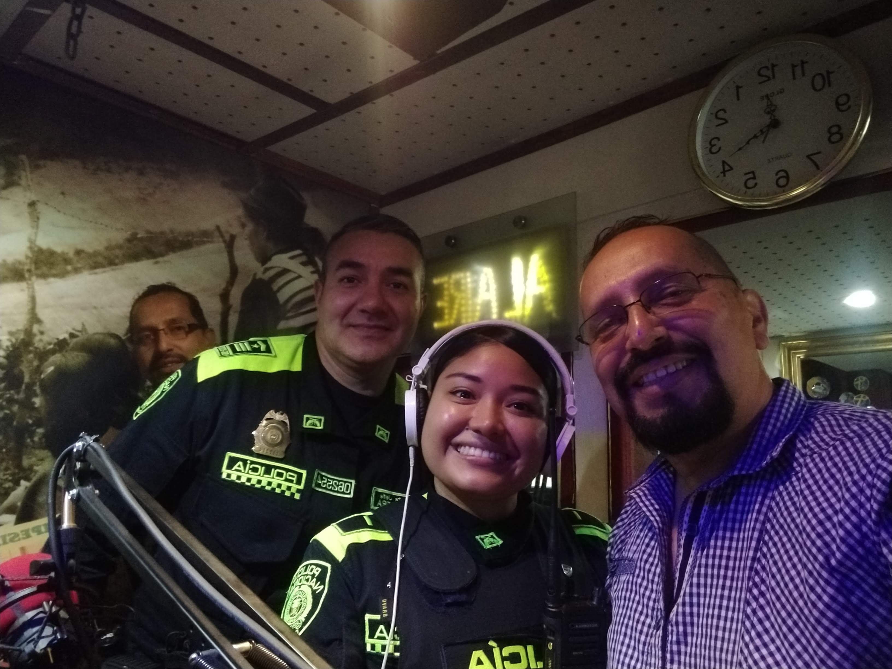
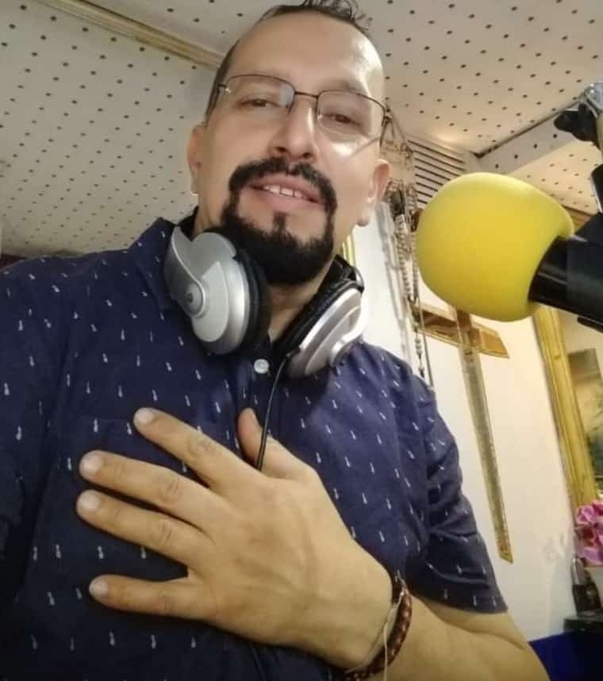

Síguenos en Facebook
Acompáñanos en las publicaciones y las actividades comunitarias de la emisora.
Visitar FacebookEscúchanos
Voces que inspiran, historias que transforman.
Reproductor de audio en línea
Acompáñanos en las publicaciones y las actividades comunitarias de la emisora.
Visitar Facebook
Un legado de servicio con pasión y entrega, que busca transformar vidas y construir un futuro mejor.
El poder transformador de la comunicación: a través de la palabra, el compromiso y la acción, construimos puentes donde otros ven muros. La comunicación no solo informa, transforma.
Leer Quiénes Somos
Director
El 22 de agosto de 2015, el Programa Social Policía Comunidad, liderado por Erasmo Angarita Tovar, exalumno de ACPO en 1993, su equipo de trabajo y el concurso de exalumnos, educadores y amigos de la Educación Fundamental Integral, revivió el legado de monseñor José Joaquín Salcedo con la apertura de la emisora virtual Historia de un Legado.
Erasmo Angarita Tovar
Director
Barrio Potosí, Localidad de Ciudad Bolívar, Bogotá D.C., Colombia
emisorahistoria@emisorahistoriadeunlegado.org
Contáctanos por WhatsApp